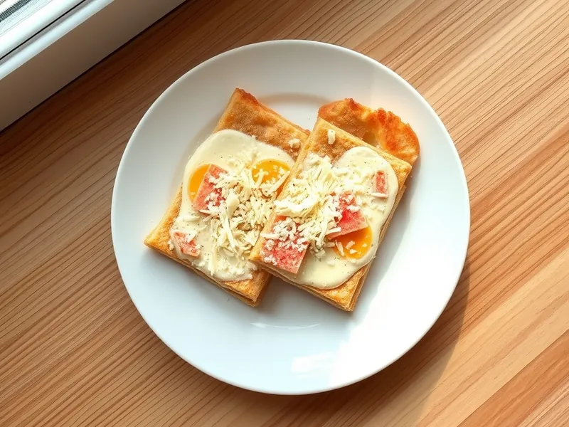

Закусочный торт из лаваша с крабовыми палочками
Слои лаваша с крабовыми палочками, яйцами, сыром и чесночным майонезом
160 мин8 порц.364 ккал на порциюБ 14 · Ж 24 · У 23Русская кухня
Открыть в приложении: порции, таймеры, список покупок
Продукты на 8 порц.
- Лаваш тонкий3 шт
- Крабовые палочки1 шт
- Яйцо куриное4 шт
- Сыр твёрдый150 г
- Майонез180 г
- Чеснок2 зуб.
- Укроп15 г
Как готовить
- Сварите яйца вкрутую 10 минут на среднем огне, остудите в холодной воде и очистите.
- Смешайте майонез с выдавленным чесноком и рубленым укропом.
- Вырежьте из лаваша по тарелке круги или квадраты одного размера, должно выйти 6 коржей.
- Мелко нарежьте крабовые палочки, натрите яйца и сыр на крупной тёрке, каждую начинку держите отдельно.
- Положите корж, смажьте чесночным майонезом и посыпьте крабовыми палочками; следующий слой сделайте с яйцами, затем с сыром, и повторите.
- Верхний корж смажьте майонезом и посыпьте остатками сыра.
- Накройте торт плёнкой и уберите в холодильник минимум на 2 часа, чтобы лаваш пропитался и стал мягким.
- Нарежьте торт острым ножом на куски, как обычный торт.
Совет. Не жалейте соус на коржи, но и не заливайте: на каждый слой хватает 2 столовых ложек, иначе торт поплывёт при нарезке.